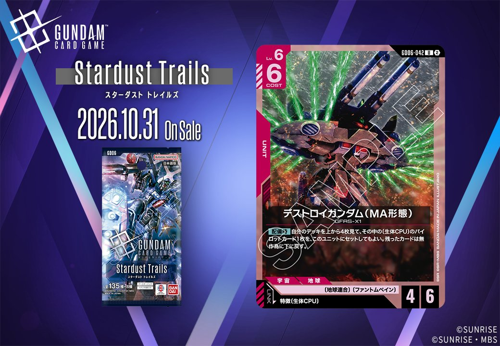
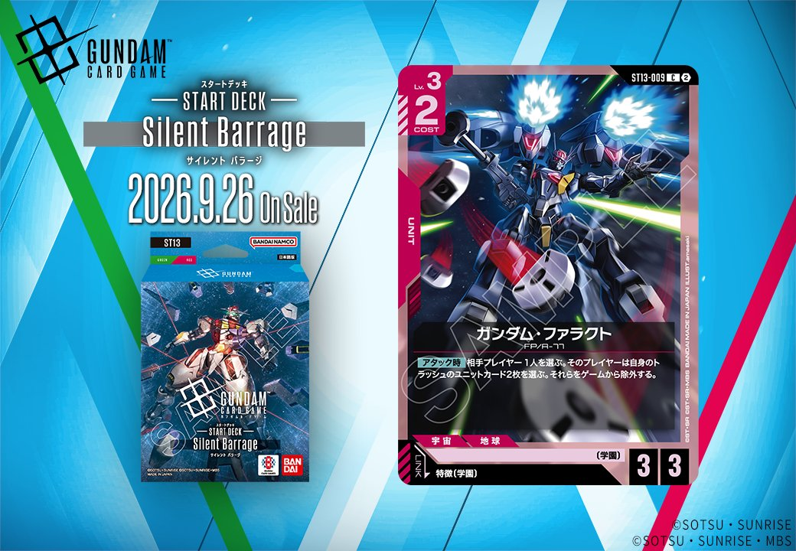

今回は赤のUNIT2枚を取り上げます。GD06収録の「デストロイガンダム（MA形態）」（GD06-042、2026年10月31日発売）は特徴に生体CPUを持つPILOTとのリンクを、ST13収録の「ガンダム・ファラクト」（ST13-009、2026年9月26日発売）は特徴に学園を持つPILOTとのリンクを備えます。それぞれのリンク条件を確認していきましょう。

デストロイガンダム（MA形態） (GD06-042)
| 色 | 赤 | タイプ | UNIT |
| Lv | 6 | コスト | 6 |
| AP | 4 | HP | 6 |
| 特徴 | 〔生体CPU〕 | ||
| リンク条件 | 特徴に生体CPUを持つPILOT | ||
効果: 【配備時】自分のデッキを上から4枚見て、その中の〔生体CPU〕のパイロットカード1枚を、このユニットにセットしてもよい。残ったカードは無作為に下に戻す。
COST6でAP4/HP6のLv.6ユニットで、【配備時】にデッキ上4枚から〔生体CPU〕パイロットを1枚このユニットにセットできる自己完結性が特長です。リンク先は特徴に生体CPUを持つパイロットで、同日公開のスティング・オークレー(GD05-091)を引き当てればそのままセットして展開できます。デッキを掘る枚数が4枚と限られるため確実性はデッキ内の生体CPU密度に依存する点は留意したい、2026-10-31発売のカードです。

ガンダム・ファラクト (ST13-009)
| 色 | 赤 | タイプ | UNIT |
| Lv | 3 | コスト | 2 |
| AP | 3 | HP | 3 |
| 特徴 | 〔学園〕 | ||
| リンク条件 | 特徴に学園を持つPILOT | ||
効果: 【アタック時】相手プレイヤー1人を選ぶ。そのプレイヤーは自身のトラッシュのユニットカード2枚を選ぶ。それらをゲームから除外する。
ガンダム・ファラクト（ST13-009）はCOST2でAP3/HP3と標準的なステータスを持つ赤のLv.3ユニット。【アタック時】に相手のトラッシュからユニットカード2枚を除外でき、格闘戦（ST03-013）や戦技の向上（GD03-109）の【バースト】再利用や、資源衛星パラオ（GD01-128）の【バースト】配備といったトラッシュ起点の動きを抑制できる点が特徴。 〔学園〕特徴を持つパイロットとリンクするため、同特徴のパイロットと組み合わせて運用したい。2026-09-26発売。


関連カード
-
スティング・オークレー(GD05-091)赤系デッキ内採用率0% (1デッキ)
-
 格闘戦(ST03-013)赤系デッキ内採用率21.4% (1053デッキ)
格闘戦(ST03-013)赤系デッキ内採用率21.4% (1053デッキ) -
 GQuuuuuuX（オメガ・サイコミュ起動時）(GD03-034)赤系デッキ内採用率15.9% (781デッキ)
GQuuuuuuX（オメガ・サイコミュ起動時）(GD03-034)赤系デッキ内採用率15.9% (781デッキ) -
 資源衛星パラオ(GD01-128)赤系デッキ内採用率14.8% (725デッキ)
資源衛星パラオ(GD01-128)赤系デッキ内採用率14.8% (725デッキ) -
 戦技の向上(GD03-109)赤系デッキ内採用率13% (640デッキ)
戦技の向上(GD03-109)赤系デッキ内採用率13% (640デッキ) -
 オルガ＆クロト＆シャニ(GD02-087)青系デッキ内採用率0% (0デッキ)
オルガ＆クロト＆シャニ(GD02-087)青系デッキ内採用率0% (0デッキ) -
ステラ・ルーシェ(GD05-090)赤系デッキ内採用率0% (0デッキ)
-
ステラ・ルーシェ(GD05-090_p1)赤系デッキ内採用率0% (0デッキ)
-
 アウル・ニーダ(GD05-092)赤系デッキ内採用率0% (0デッキ)
アウル・ニーダ(GD05-092)赤系デッキ内採用率0% (0デッキ) -
 スレッタ・マーキュリー(ST13-012)NEW赤系 — 同色・共通特徴: 学園（新カード）
スレッタ・マーキュリー(ST13-012)NEW赤系 — 同色・共通特徴: 学園（新カード）